We are excited to introduce Cloud Kickstart Components, an internship project aimed at simplifying the process of deploying applications on Amazon Web Services (AWS). As interns, we have developed a template that enables the automatic deployment of applications to AWS, harnessing the power of multiple AWS services effortlessly.
Our internship project focuses on automating the deployment process, eliminating the need for manual configurations and reducing the chances of errors. With this template, developers can seamlessly deploy their applications to AWS, allowing them to concentrate on their core application logic and development tasks.
Through Cloud Kickstart Components, we provide an easy-to-use template that integrates with various AWS services, including EKS and ECR instances, Amazon CloudWatch, Amazon S3 for storage and Amazon IAM. This integration empowers developers to take advantage of multiple AWS services without individual setup and configuration complexities.
ARCHITECTURE
The first step in our deployment process is for the developer to push their code to the designated repository, such as GitHub. This ensures that the latest changes and updates are available for deployment. Once the code is pushed, our deployment pipeline kicks into action. The Spring Boot application is built, packaged, and transformed into a Docker image. This image encapsulates the application and its dependencies, making it portable and ready for deployment. The Docker image is then stored in a Docker registry, such as Docker Hub. This step ensures the image is prepared and available for deployment across different environments.
We use the power of GitHub Actions, a workflow automation tool, to streamline the deployment process. Using predefined workflows, we configure GitHub Actions to automatically trigger the deployment process whenever a new Docker image is available. GitHub Actions pulls the Docker image from the registry, fetching the latest version of the Spring Boot application built in the previous steps. This ensures that the deployment uses the most up-to-date version of the application.
With the Docker image available, we utilize AWS services to deploy the application. Depending on the specific requirements, it can automatically provision resources such as Amazon Elastic Kubernetes Service (EKS) instances, Amazon Elastic Container Registry (ECR), Amazon Simple Storage Service (S3) buckets and many more. After deployment, we implement continuous monitoring and testing mechanisms using CloudWatch. We set up custom metrics, create dashboards for visualization, and define alarms to detect anomalies or performance issues. Additionally, we leverage CloudWatch Logs to collect application logs for troubleshooting and analysis.
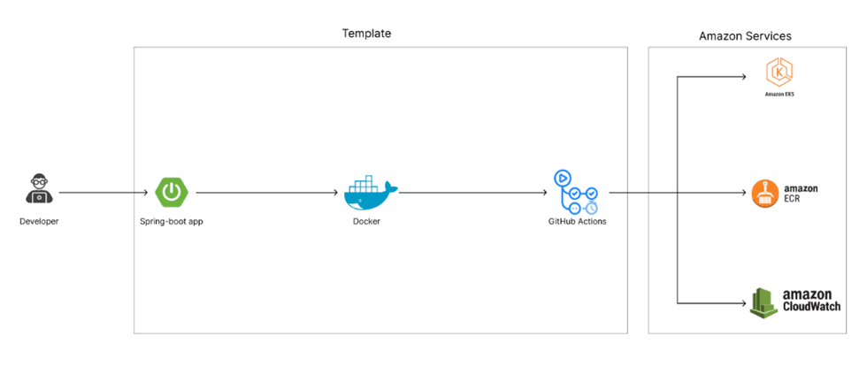
DOCKER
Docker Hub is a central repository allowing us to store, manage, and distribute our Docker images. At the same time, AWS provides the ideal platform for deploying and running our containerized applications. To begin the deployment process, we build and package our application code into a Docker image, encapsulating all the necessary dependencies and configurations. This Docker image acts as a self-contained unit, ensuring consistent deployment across various environments. We leverage the power of Docker Hub, a trusted and widely used container registry, to store and manage our Docker images. By utilizing Docker Hub, we can easily version our images, making tracking and managing changes over time simple. This ensures that our Docker images are always up to date, incorporating the latest changes and enhancements. Once our Docker images are prepared on Docker Hub, we will deploy them to AWS.
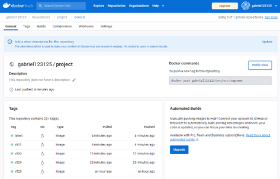
GITHUB ACTIONS
We use the capabilities of GitHub Actions, a workflow automation tool. We have automated various tasks with GitHub Actions, including deploying to Docker and seamlessly integrating our applications with multiple Amazon Web Services (AWS).
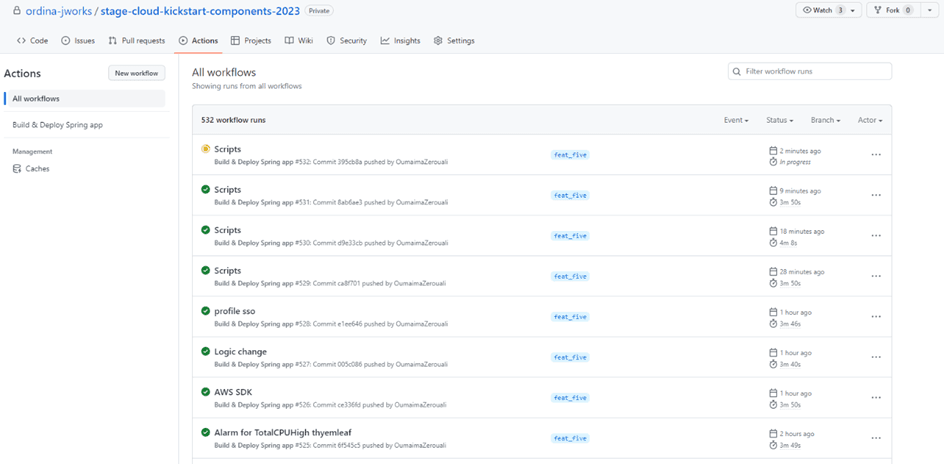
One of the key benefits of GitHub Actions is its ability to automate the deployment of applications using Docker images. Using a simple configuration, we have set up workflows that automatically build our applications, package them into Docker images, and push those images to a Docker registry. This automation saves us valuable time and effort, ensuring our applications are always up-to-date and readily available for deployment.
This automation allows us to seamlessly deploy our applications, configure the necessary settings, and utilize the full capabilities of AWS without manual intervention. For example, when triggering a deployment workflow, GitHub Actions pulls the Docker image from the registry, distributes it to ECR and deploys it to an Elastic Kubernetes Service (EKS) cluster. Simultaneously, it can create S3 buckets for storage, create/add some CloudWatch metrics, and set up the alarms and necessary permissions and configurations, all in an automated and reliable manner. This level of automation significantly reduces the complexity and time required to deploy and integrate our applications with AWS services.
In conclusion, GitHub Actions has become an invaluable tool, empowering us to automate the deployment to Docker and seamlessly utilize multiple AWS services.
AMAZON WEB SERVICES (AWS)
We have chosen Amazon Web Services (AWS) as our preferred cloud computing platform. With AWS, we have access to a comprehensive suite of cloud services that enable us to build, deploy, and manage our applications and infrastructure with flexibility, scalability, and reliability.
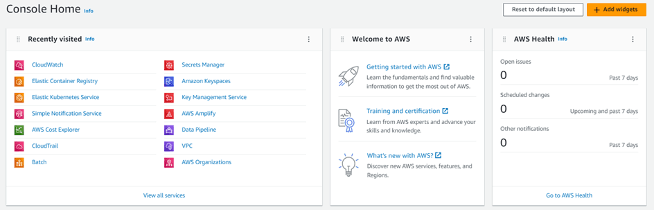
By leveraging AWS as our cloud computing platform, we can take advantage of a vast array of services and features that enable us to build and scale our applications efficiently. AWS’s flexibility, scalability, and reliability empower us to focus on innovation and deliver exceptional experiences to our users while benefiting from the robust infrastructure and services AWS provides.
AMAZON ECR
We utilize AWS Elastic Container Registry (ECR) as a pivotal component in our deployment and containerization strategy. AWS ECR is a secure and fully managed container registry, enabling us to store, manage, and deploy container images effortlessly. With AWS ECR, we can securely store our Docker container images, ensuring their availability for deployment across various environments. The integration of ECR within the AWS ecosystem allows us to seamlessly incorporate it into our deployment pipelines, simplifying the process of deploying containerized applications.
Moreover, AWS ECR provides powerful monitoring and management capabilities. We can track image usage, monitor repository activity, and gain insights into resource utilization through integration with AWS CloudWatch. This allows us to monitor the performance of our container images and repositories, enabling proactive management and optimization.
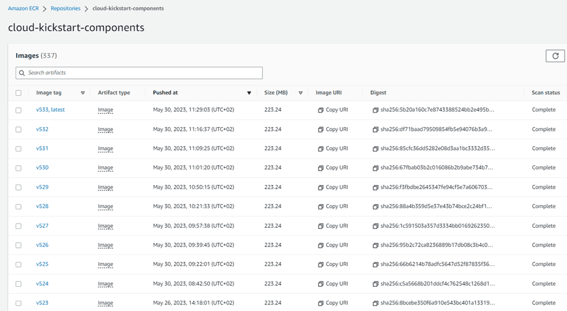
AMAZON EKS
To deploy these containers effectively, we have adopted Amazon Elastic Kubernetes Service (EKS) from Amazon Web Services (AWS). AWS EKS provides a robust and reliable platform to deploy, scale, and easily manage our containerized applications. AWS EKS is a fully managed Kubernetes service that simplifies the deployment and management of containerized applications. This allows us to streamline our development and operations processes, enabling faster time-to-market and improved agility.
Amazon Elastic Kubernetes Service (EKS) pod is the smallest and most basic unit of deployment within a Kubernetes cluster. A pod represents a single or multiple instance(s) of a running application workload within the cluster. It encapsulates one or more tightly coupled containers that share the same network namespace, IP address, and storage volumes. These containers within a pod often work together to fulfill a specific task or service.
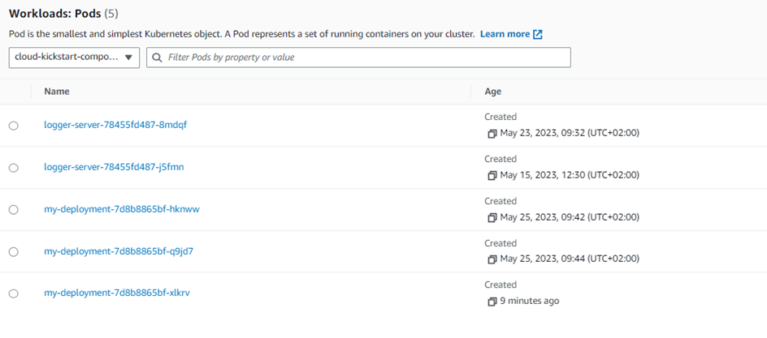
AMAZON CLOUDWATCH
AWS CloudWatch plays a vital role in our operations by providing us with real-time insights into the performance and health of our AWS resources and applications. With AWS CloudWatch, we can collect and analyze a wide range of metrics across various AWS services, including compute instances, databases, storage, and networking. This comprehensive monitoring solution allows us to gain deep visibility into the performance and utilization of our resources, enabling us to make informed decisions and optimize our infrastructure.
1. CLOUDWATCH DASHBOARD
Additionally, AWS CloudWatch provides us with the flexibility to create customized dashboards. These dashboards offer a consolidated view of our key metrics, allowing us to monitor and analyze critical aspects of our infrastructure and applications in a centralized and intuitive manner.
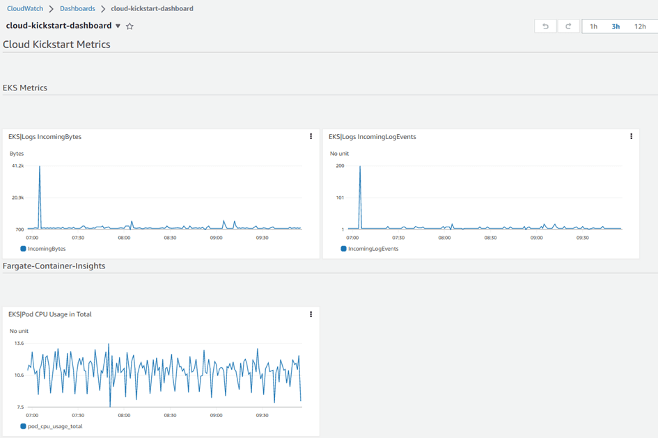
The example image above shows the different metrics we included, such as CPU usage, Incoming log events,…
2. CLOUDWATCH LOGS
AWS CloudWatch also supports log management and analysis through CloudWatch Logs. This feature enables us to centralize and collect logs generated by our applications and services. We can then search, filter, and analyze these logs, making troubleshooting and debugging more efficient. CloudWatch Logs simplifies investigating issues and monitoring application behavior by consolidating logs in a single location.
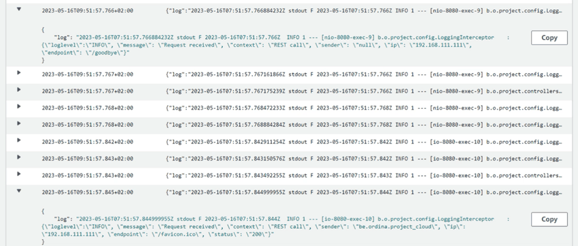
As shown image above, different logs are being shown inside CloudWatch Logs. Every endpoints inside our application sends the following logs :
- The log level
- The message
- The context
- The sender
- The IP address
- The endpoint
Depending on the endpoint itself, the values are going to be different.
3. CLOUDWATCH ALARMS
One of the key features we leverage in AWS CloudWatch is the ability to set up custom alarms. These alarms enable us to define specific thresholds and conditions for our metrics. When a metric breaches a threshold for a specific timeframe or meets a predefined condition.
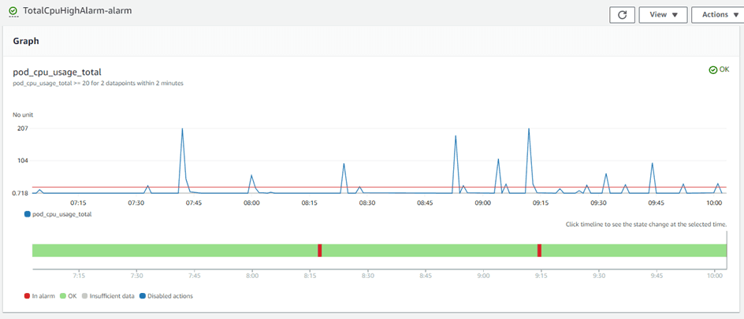
CloudWatch triggers an alarm, notifying us of potential issues or deviations from expected behavior. This proactive monitoring approach empowers us to address potential problems before they impact our applications or services. In the example image above, the CPU usage is being monitored. The red line represents the upper CPU usage limit, meaning the maximum value that can be reached. If the CPU surpasses the maximum value indicated by the red line, as shown in the image, a notification will be sent to a specific email address.
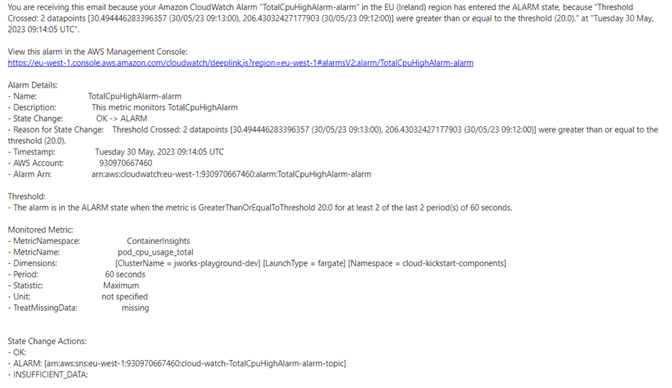
4. CLOUDWATCH CONTAINER INSIGHTS
Container Insights, powered by Amazon CloudWatch, offers real-time monitoring and deep visibility into the performance and health of your containers. Integrating Container Insights into our deployment template enables developers to gain valuable insights and make data-driven decisions to optimize their containerized applications. With Container Insights, you can effortlessly monitor crucial metrics such as CPU and memory utilization, network performance, disk I/O, and container-level resource allocation. This level of observability empowers you to identify performance bottlenecks, proactively troubleshoot issues, and optimize resource allocation for better efficiency. CloudWatch automatically collects metrics for many resources, such as CPU, memory, disk, and network. At the same time, Container Insights supports collecting metrics from clusters deployed on Fargate for both Amazon ECS and Amazon EKS.
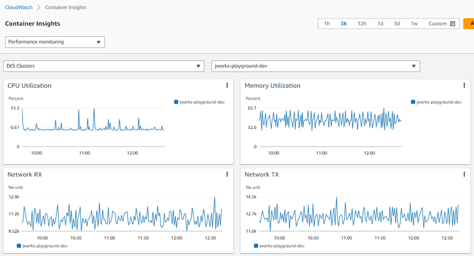
For example, we utilize Container Insights to monitor our EKS cluster .
TERRAFORM
In our project, we use the capabilities of Terraform to perform a wide range of tasks automatically. Terraform is a powerful infrastructure as code (IaC) tool that allows us to define, provision, and manage our project resources seamlessly and efficiently. With Terraform, we can customize our infrastructure requirements and represent them in a declarative configuration language. This enables us to specify the desired state of our infrastructure, including the resources, dependencies, and configurations needed for our project.
One of the key advantages of using Terraform is its ability to automate the provisioning and management of resources across various cloud providers, including Amazon Web Services (AWS), Microsoft Azure, and Google Cloud Platform (GCP). This eliminates manual interventions, reduces human error, and ensures consistent deployments across environments.
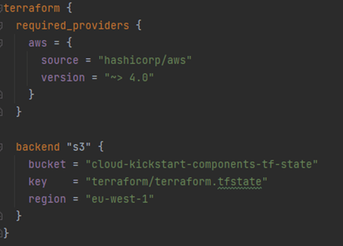
The code shown above shows a snippet of terraform code inside our project. This snippet code will configure the required provider and backend settings. It ensures that the project can interact with AWS resources using the specified provider and store the state of the infrastructure in an S3 bucket.
CONCLUSION
Our cloud kickstart project has been an extraordinary journey, and we express deep appreciation for the exceptional support and guidance offered by our mentors, Pieter Vincken and Sigriet Van Breusegem. This experience has truly been transformative, allowing us to acquire invaluable knowledge and skills, significantly enhancing our proficiency in cloud computing and automation.
- Through this project, we have developed a comprehensive understanding of various aspects, including:
- Cloud infrastructure and its intricacies.
- Proficiency in working with Amazon Web Services (AWS), a leading cloud computing platform.
- Extensive knowledge and hands-on experience with multiple AWS services, enabling us to leverage their full potential.
- Mastery of Terraform, an essential tool for infrastructure automation and provisioning.
- Expertise in automation techniques, empowering us to streamline and optimize various processes.
- Proficiency in setting up Continuous Integration/Continuous Deployment (CI/CD) pipelines using GitHub Actions, ensuring efficient code deployment and delivery.
- Strong grasp of Agile methodologies, allowing us to adapt swiftly to changing requirements and deliver high-quality results.
- Effective communication and teamwork skills, fostering collaboration and synergy among team members.
Undoubtedly, this Cloud Kickstart project has been instrumental in broadening our horizons and equipping us with the expertise needed to thrive in cloud computing and automation. We are deeply grateful for the opportunity and look forward to applying our newfound knowledge to future endeavors.
Would you like to leave a comment?